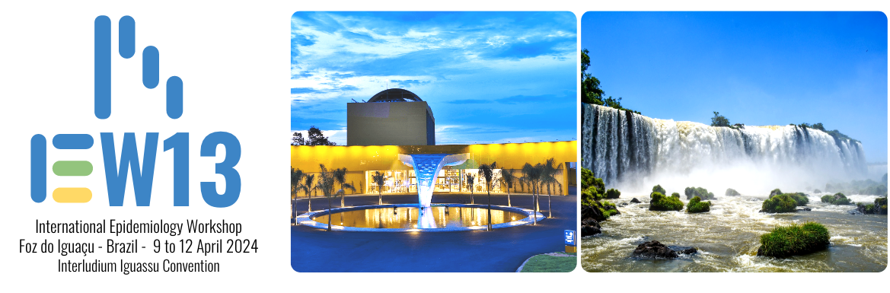
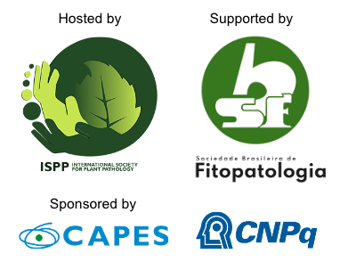
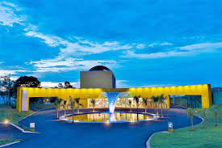

Welcome!

The Epidemiology Committee of ISPP (International Society of Plant Pathology) and SBF (Brazilian Phytopathological Society) are pleased to announce the venue of the 13th International Epidemiology Workshop. The meeting will take place in Foz do Iguaçu, Brazil from 9-12 April 2024 at the Interludium hotel. The meeting is sponsored by a CAPES-PAEP and a CNPq grant projects.
About the meeting
The IEW is the principal working group of plant disease epidemiology. This is an organization with a rich history, and has met approximately every 5 years since 1963. The regularly published proceedings of the IEW include recognized benchmarks of epidemiology. A significant feature of this conference is that all participants meet as a unified group. Read more
Registration (fees US$)
We are thrilled to announce that the ticket sale is now closed - we are all sold out.
| Category | Early (until Nov 15) | Late (until Feb 15) |
|---|---|---|
| Regulara | 370$ | 410$ |
| Studenta,b | 270$ | 310$ |
| Accompanying (adult) | 180$ |
a SBF (Brazilian Phytopathological Society) members will benefit from a 40$ discount
b Student Card
What is included in your registration?
All lunches, dinners (including dinner show), tour, Monday reception, and publication and library distribution of the conference proceedings.
Note: Registration fees are completely refundable up to 15 January 2024, so consider registering now. After 15 January 2024, cancellations will receive a 50% refund up to 15 February 2024. Registration fees are not refundable after 15 February 2024. No registrations and payments can be accepted after 15 February.
Abstracts and posters
See the list of accepted POSTERS and ORAL TALKS judged by the Scientific Committee.
We will be renting portable walls for displaying the posters. The available space is 1 m (width) x 2.2 m (height). Please make sure your poster size does not exceed such dimensions.
Lodging
Rooms for IEW13 participants have been reserved at Interludium Iguassu Convention Hotel, where all activities will take place, at a discount rate. Reservations can be made via email: reservas.ifoz@atlanticahotels.com.br or via hotel booking webpage. Use the promo code IEW13.
The daily rates for different rooms are:
SGL R$190 + 5% ISS
DBL R$226 + 5% ISS
TPL R$292 + 5% ISS
How to reach Foz do Iguaçu
By Plane: The nearest airport to reach Foz do Iguaçu is the Foz do Iguaçu/Cataratas International Airport that offers frequent flights to Rio de Janeiro, Sao Paulo, Santiago de Chile etc.
By Bus: Foz do Iguaçu is connected to rest of the major cities in Brazil through bus transportation that links to Sao Paulo, Rio de Janeiro, Curitiba, Campo Grande, Belo Horizonte, Florianopolis, Santos, Bonito, Criciúma, Buenos Aires.
By Car: Main highways that connect cities to Foz do Iguaçu are: From Curitiba: BR-277, From São Paulo: BR-116/BR-277, From Rio de Janeiro: BR-116/BR277
Organizing committee
Emerson Del Ponte - UFV - delponte@ufv.br
Eduardo Mizubuti - UFV
Armando Bergamin Filho - ESALQ/USP
Lilian Amorim - ESALQ/USP
Louise Larissa May De Mio - UFPR
Email list
Together with the Epidemiology committee of the International Society of Plant Pathology (ISPP), we are creating an updated list of emails that should be more easily maintained and shared with those who would like to share events and other activities in Global Plant Disease Epidemiology. As such, we made a signup email form in google docs. Only two items are required: name and email. You can add an affiliation if you want. Click here to sign up
Travel agency
We are partnering with MMC Eventos e Turismo
Contact number: +55 45 35747800 (WhatsApp link)
You can book your travel and transfers airport <-> hotel